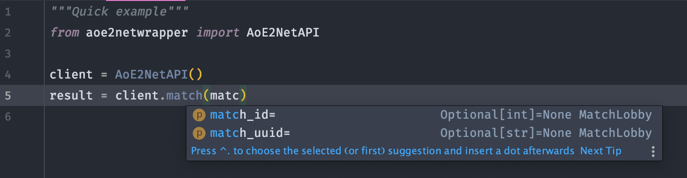

Features
Simple and Fully Typed
The packages clients' methods mirror the aoe2.net endpoints, making the api objects easy and intuitive to use.
They also come with sensible defaults everywhere possible.
All of aoe2netwrapper is type hinted, providing autocompletion and return insights everywhere.
No typing the wrong key names, coming back and forth between docs, or scrolling up and down to find if you need matchid or match_id.

Validated Response Models
The models used in aoe2netwrapper encapsulate and enhance the data returned by the aoe2.net APIs:
- No mess of confusing nested standard types: the methods all return tailored models encapsulating the returned data, recursively.
- No surprises: Data returned from the API is parsed and validated before being given back to you as custom models.
- Convenience: all models returned by the clients provide auto-completion on attributes, recursively.
As for example below, the profile_id key inside a LeaderBoardSpot inside a LeaderBoardResponse that come from the https://aoe2.net/api/leaderboard endpoint.

All the validation is handled by the well-established and robust pydantic.
Models Integration
All the other goodies from the returned pydantic models are available to you: exporting options, deep copies, ORM integration, etc.
Built-In Results Conversion to Pandas DataFrames
Installing the package with the dataframe extra gives access to the converters submodule, providing a high-level class to export results to pandas DataFrames.
The class, Convert, provides static methods taking in the direct output given by the AoENetAPI's query methods, and named after them.
Logging & Testing
- 100% test coverage.
- A codebase making use of the amazing logging from loguru, which can be integrated and extended.